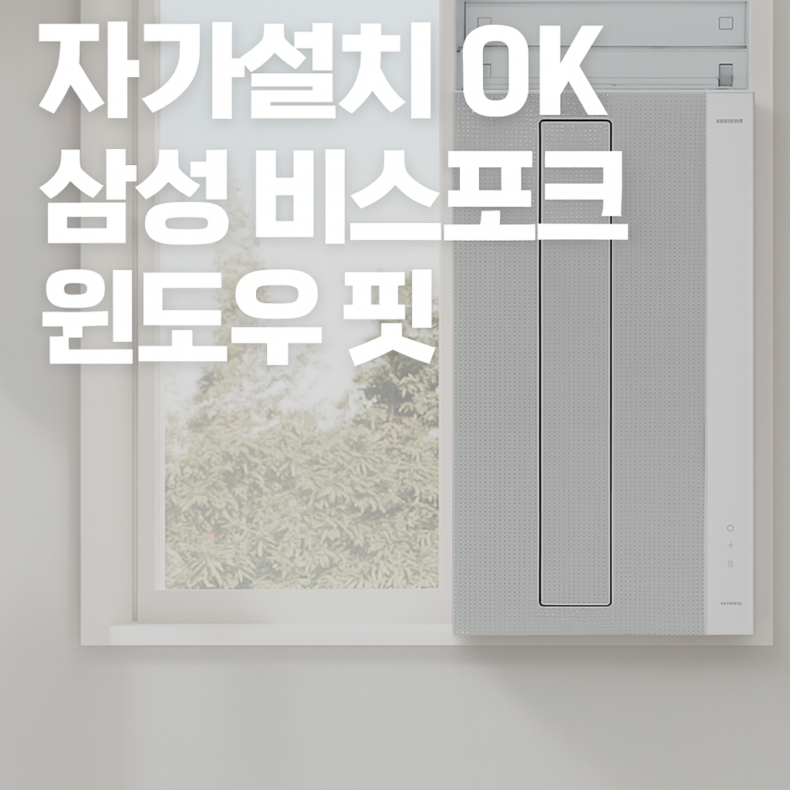

※ 이 포스팅은 쿠팡 파트너스 활동의 일환으로, 이에 따른 일정액의 수수료를 제공받습니다.
https://link.coupang.com/a/cD8w1h
이 에어컨을 사자고 제안한 건 남편이었어요. 고민은 짧았습니다. 설치는 남편이 혼자 했어요. 키트가 먼저 와서 그것부터 작업해두더라고요.
설치는 생각보다 간단했습니다. 창문 틀 사이즈만 맞으면 나사 조립 방식으로 고정할 수 있어요.
컬러는 무광 그레이 톤. 튀지 않아서 인테리어 해치지 않고 무풍 디자인도 은근 세련돼요.
리모컨도 있지만 지금은 거의 스마트싱스(SmartThings) 앱으로 조작해요. 더우면 침대에 누운 채로 바로 앱으로 켜버릴 수 있어서 진짜 편리해요.
거의 24시간 가동 중인데도 조작이 너무 편해서 크게 불편함 없었고요. 소음도 일반 냉방 기준으로는 거슬릴 정도는 아니에요.
무풍이라 바람 직접 쐬는 느낌은 없어서 좋긴 한데, 오래 틀어두면 시원함은 살짝 아쉬운 느낌 있어요. 그래서 요즘은 일반 냉방 모드로 더 많이 사용하게 되더라고요.
자가설치 가능한 창문형 에어컨 찾고 있다면 이 제품 꽤 만족스러울 수 있어요 :)
<